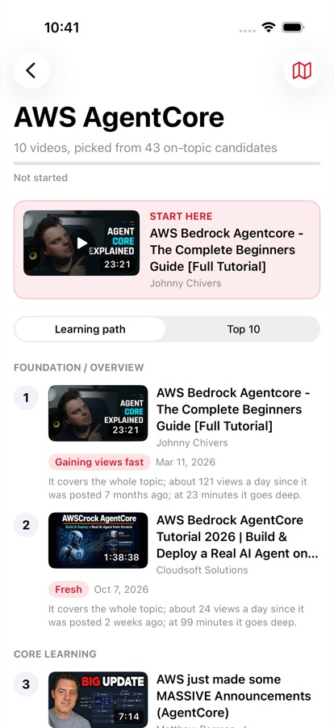
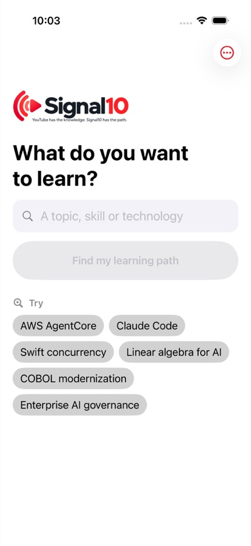
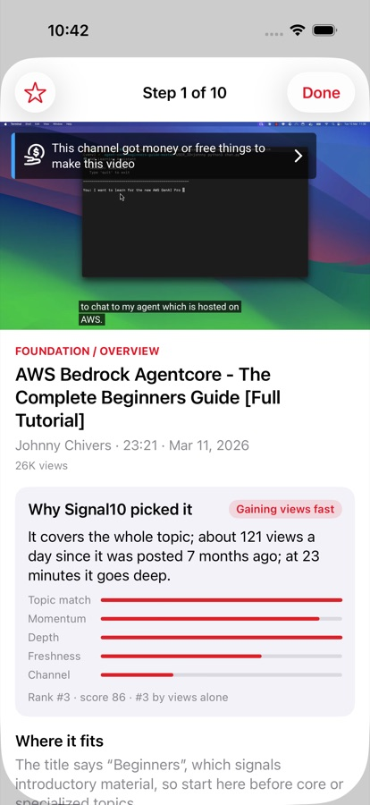
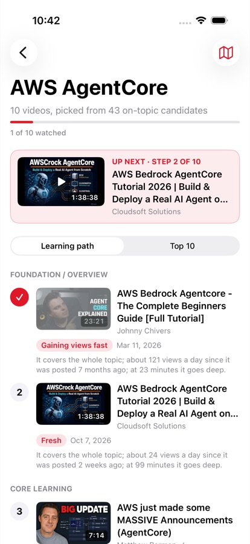
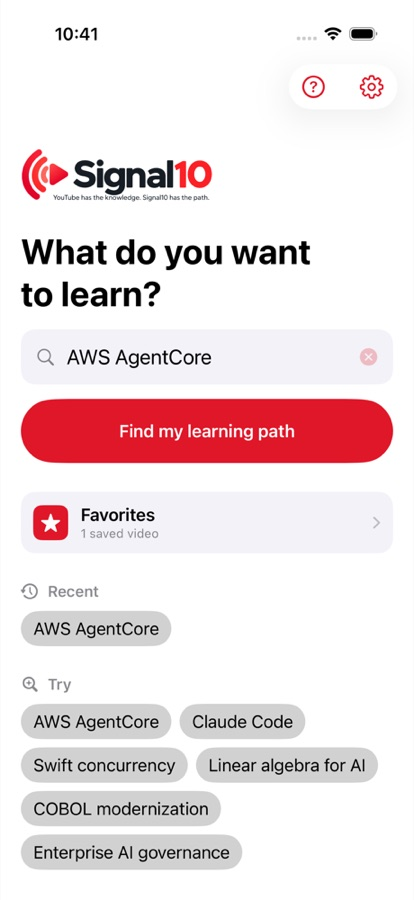
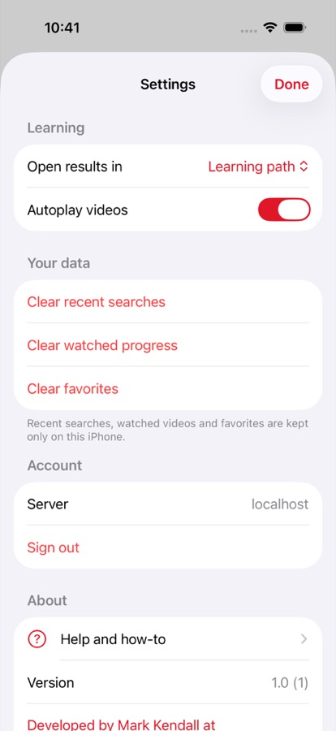
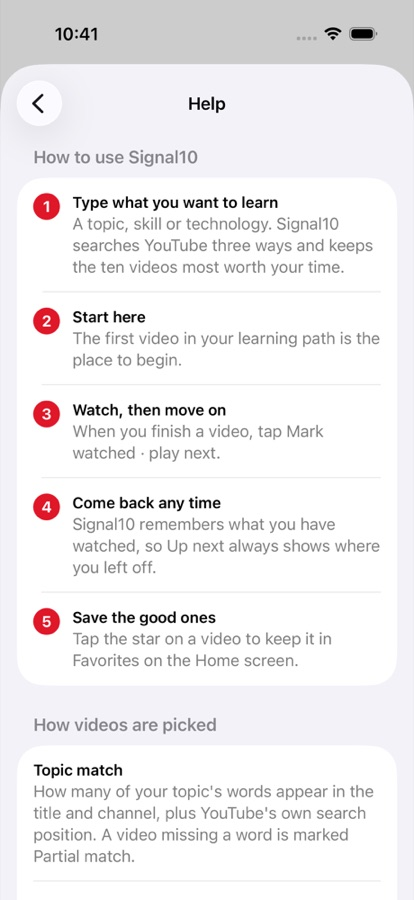

Signal10: from web app to native iPhone app
A working learning-discovery product became a tested, native iPhone app built on its existing intelligence, not a second copy of it.

"Make it feel built for iPhone, without reinventing it."
YouTube has the knowledge. Signal10 gives you the path.
Signal10 answers one question: what are the best videos to watch to learn this subject? It searches YouTube, cuts the noise and duplicates, ranks on more than view counts, and turns the best ten into a learning path. It already worked as a web app.
The brief was to make it a production-quality native iPhone app, with firm boundaries:
- Treat the existing product as the source of truth: same ranking, reasons, learning path and backend.
- Never ship an API key or model secret inside the app.
- Keep the AI provider replaceable, so the app never depends on one model vendor.
- Keep it simple: one question, "What do you want to learn?", and an obvious next video.
The Repogenic Loop, applied to one app
Every step left evidence in the repository, so the speed came with proof.
Intent
The brief became a one-page intent with 10 numbered, testable success criteria, written after reading the whole existing repository first.
Variation
AI-assisted engineering produced the SwiftUI client, its models and its tests, reusing the existing service's API instead of rebuilding its logic.
Selection
Failing tests were committed first, then code until they passed, then real searches and an automated walkthrough on a simulated iPhone.
Inheritance
Each success merged with its evidence: screenshots, a build-and-run guide, and notes so the next feature starts from what works.
Guardrails
Secret scanning, a no-keys-in-the-app test, untrusted YouTube text rendered as plain text, and the AI boundary kept on the server.
A learning path you can work through
Type a topic, start watching. The app remembers where you are, so coming back always shows what's next.






App icon and wordmark carried over from the existing brand.
Proven, not just demoed
| Tests written before the code | Each feature began with a commit holding only failing tests and the written intent. The git history shows the tests came first. |
|---|---|
| 30 unit tests, 2 end-to-end tests | Decoding real server replies, sign-in, error handling, progress, favorites, settings and player safety. End-to-end tests sign in, search, play, mark watched, continue the path, save a favorite, and open Settings and Help, with a screenshot at each step. |
| Existing product unchanged | All 79 existing service tests still pass. The web app and its live deployment were left untouched. |
| No secrets in the app | The built app was scanned for keys and credentials, with no matches. A test fails the build if a key ever appears in the app's settings. |
| Running on real hardware | Signed, installed and used on an iPhone 17. Feedback from the device turned into two quick, tested layout improvements. |
| Second feature, same discipline | Settings, Help and Favorites went through the same loop: an 8-criterion intent, failing tests, code, live end-to-end proof. |
Speed is only valuable with proof
Reuse, not rewrite
The iPhone app consumes the product's existing intelligence. One source of truth for ranking and AI behaviour means one place to improve it, and nothing drifts between web and phone.
Safe by design
Secrets stay on the server. The AI provider sits behind the service boundary, so it can move between model vendors, or route by cost, without an app update.
Evidence a buyer can check
Intent, failing tests, passing tests, screenshots and device builds are all in the repository. That is the RepoGenics difference: faster delivery that holds up to scrutiny.
Have an idea for an iPhone app?
From intent to a tested app on your own phone, then on to App Store submission in about five days, with the evidence to show for every step.
Talk to Repogenic